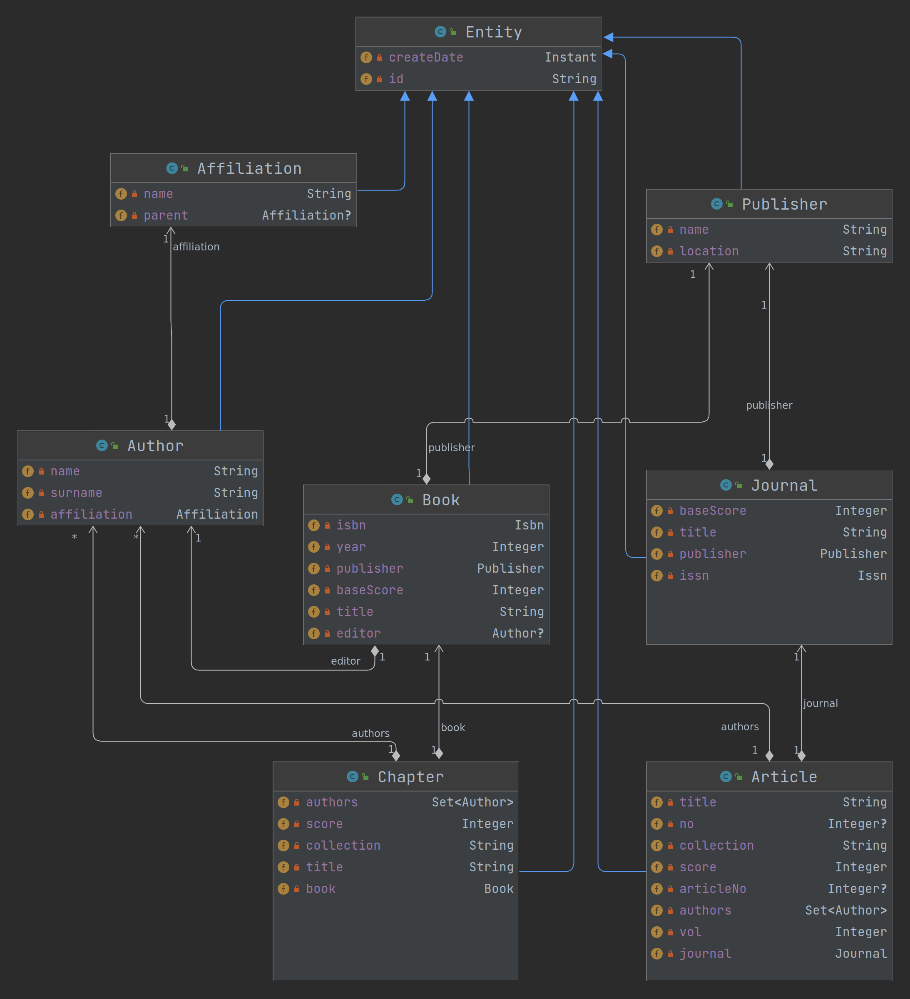

Metody i narzędzia generowania kodu wykonywalnego
ppor. mgr inż. Norbert Waszkowiak
nr tel.: 261 839 060
e-mail: norbert.waszkowiak@wat.edu.pl
pomieszczenie: bud. 100 pok. 254B
konsultacje: poniedziałek 15:15 - 16:15 (po wcześniejszym umówieniu) (zapraszam również do kontaktu przez MS Teams)
e-mail: norbert.waszkowiak@wat.edu.pl
pomieszczenie: bud. 100 pok. 254B
konsultacje: poniedziałek 15:15 - 16:15 (po wcześniejszym umówieniu) (zapraszam również do kontaktu przez MS Teams)
Zasady oceniania
- Każde przedstawione zadanie podlega ocenie 2-5;
- W przypadku stwierdzenia niesamodzielności w wykonaniu pracy zostanie ona wliczona do średniej jako 0;
- Ostateczna ocena z laboratoriów będzie wynikała ze średniej z wszystkich zadań laboratoryjnych;
- Warunkiem zaliczenia jest oddanie wszystkich zadań laboratoryjnych w ustalonym terminie dla każdego zadania.
-
Ocenie podlegać będą:
- Poprawność wykonania;
- Zakres funkcjonalności rozwiązania;
- Samodzielność;
- Zastosowanie dobrych praktyk programistycznych;
- Wykorzystanie systemu kontroli wersjii.
Wyrażenia regularne
A komu to potrzebne? A dlaczego?
Wyrażenia regularne - (ang. regular expression, w skrócie regex lub regexp) - wzorzec opisujący łańcuch symboli. Teoria wyrażeń regularnych jest związana z teorią języków regularnych. Wyrażenia regularne mogą określać zbiór pasujących łańcuchów, jak również wyszczególniać istotne części łańcucha.Pokaz z objaśnieniem
Przykład z grupami dziekańskimi

Dane:
WCY18IX1S3 ; WCY19IG1S1 ; WCY19IJ1N1 ; WCY19IJ1S1 ; WCY19IJ2S1 ; WCY19IJ3S1 ; WCY19IJ4S1 ; WCY19IL1S0 ; WCY19IT1S0 ; WCY19IW1S0 ; WCY19KA1S0 ; WCY19KB1S0 ; WCY19KC1S0 ; WCY19KC1S1 ; WCY19KS1S0 ; WCY19KS1S1 ; WCY20IG1S1 ; WCY20IJ1N1 ; WCY20IJ1S1 ; WCY20IJ2S1 ; WCY20IJ3S1 ; WCY20IM1S1 ; WCY20IX1S0 ; WCY20IX2S0 ; WCY20IX3S0 ; WCY20IX4S0 ; WCY20IX5S0 ; WCY20IX6S0 ; WCY20IY1S1 ; WCY20IY2S1 ; WCY20IY3S1 ; WCY20IY4S1 ; WCY20IY5S1 ; WCY20KA1S1 ; WCY20KC1S1 ; WCY20KX1S0 ; WCY20KX2S0 ; WCY20KX3S0 ; WCY20KX4S0 ; WCY20KY1S1 ; WCY20KY2S1 ; WCY20KY3S1 ; WCY21E71N5 ; WCY21I*BDa ; WCY21I*BDb ; WCY21I*SO ; WCY21I*Tpi ; WCY21IB1S4 ; WCY21IB2S4 ; WCY21IE1S4 ; WCY21IH1S4 ; WCY21IM1S4 ; WCY21IV1S4 ; WCY21IX1N1 ; WCY21IX1S0 ; WCY21IX2N1 ; WCY21IX2S0 ; WCY21IX3S0 ; WCY21IX4S0 ; WCY21IX5S0 ; WCY21IX6S0 ; WCY21IY1S1 ; WCY21IY2S1 ; WCY21IY3S1 ; WCY21IY4S1 ; WCY21K*SAa ; WCY21K*SAb ; WCY21KB1S4 ; WCY21KB2S4 ; WCY21KB3S4 ; WCY21KC1S4 ; WCY21KS1S4 ; WCY21KS2S4 ; WCY21KT1S4 ; WCY21KX1S0 ; WCY21KX2S0 ; WCY21KX3S0 ; WCY21KX4S0 ; WCY21KX5S0 ; WCY21KX6S0 ; WCY21KY1S1 ; WCY21KY2S1 ; WCY22IA2aS6 ; WCY22IA2bS6 ; WCY22IB1N2 ; WCY22IB2N2 ; WCY22IB3aS6 ; WCY22IB3bS6 ; WCY22IBOS6 ; WCY22IE3aS6 ; WCY22IE3bS6 ; WCY22IX1N1 ; WCY22IX1N5 ; WCY22IX1S0 ; WCY22IX2N1 ; WCY22IX2N5 ; WCY22IX2S0 ; WCY22IX3N1 ; WCY22IX3S0 ; WCY22IX4S0 ; WCY22IX5S0 ; WCY22IY1S1 ; WCY22IY2S1 ; WCY22IY3S1 ; WCY22IY4S1 ; WCY22IY5S1 ; WCY22IZ3aS6 ; WCY22IZ3bS6 ; WCY22KX1S0 ; WCY22KX2S0 ; WCY22KX3S0 ; WCY22KX4S0 ; WCY22KX5S0 ; WCY22KX6S0 ; WCY22KX7S0 ; WCY22KY1S1 ; WCY22KY2S1 ; WCY22SO3S6 ; WCY22X*BBDa ; WCY22X*BDa ; WCY22X*Fiz2a ; WCY22X*Fiz2b ; WCY22X*M1a ; WCY22X*M2a ; WCY22X*M2b ; WCY22X*Md1a ; WCY22X*TIiKa ; WME19BC1S1 ; WME19BM1S1 ; WME19BO1S1 ; WME20BE1S1 ; WME20BM1S1 ; WME20BO1S1 ; WME21BM1S4 ; WME21BX1S1 ; WME21BX2S1 ; WME21BX3S1 ; WME21BX4S1 ; WME22B1N5 ; WME22BX1S1 ; WME22BX2S1 ; WME22BX3S1 ; WME22BX4S1Pokaz z objaśnieniem

Wprowadzenie w sytuacje taktyczna
Firma "S" utrzymująca system do zarządzania danymi badawczymi, publikacjami i pracownikami naukowymi. Pozyskała nowego klienta, który dotychczas korzystał z innego rozwiązania i zaszła potrzeba migracji danych z poprzedniego systemu. W systemie firmy "S" w encji opisującej publikacje istnieją osobne pola oznaczające nr artykułu, nr wydania, strony, wydawca itp. itd. W starym systemie wszystkie te pola znajdują się w dwóch polach tekstowych, aby wyeksportować dane z tych pól, należy skorzystać z wyrażeń regularnych.Dane do zadań
Plik csv podzielony jest na następujące kolumny:
- publisher - dane wej.
- details - dane wej.
- no - dane wyj.
- vol - dane wyj.
- article no - dane wyj.
- pages in range - dane wyj.
- pages as size - dane wyj.
- publisher name - dane wyj.
- publisher location - dane wyj.
- publisher year - dane wyj.
Separator: ","
Zadanie 1 cz. 1
Opracować wyrażenia regularne służące do identyfikacji poszczególnych danych szczegółowych
publikacji na podstawie wyników z przedstawionego pliku CSV. Do końca zajęć
przesłać za pomocą formularza
opracowane wyrażenia. Formularz dopuszcza dowolną liczbę wypełnień. Czas przesłania i liczba
odpowiedzi posłużą do oceny samodzielności wykonania.
Termin oddania pracy: do końca trwania
laboratoriów
Testy jednostkowe (ang. unit test)
metoda testowania tworzonego oprogramowania poprzez
wykonywanie testów weryfikujących poprawność działania pojedynczych elementów (jednostek)
programu - np. metod lub obiektów w programowaniu obiektowym lub procedur w programowaniu
proceduralnym. Testowany fragment programu poddawany jest testowi, który wykonuje go i
porównuje
wynik (np. zwrócone wartości, stan obiektu, zgłoszone wyjątki) z oczekiwanymi wynikami - tak
pozytywnymi, jak i negatywnymi (niepowodzenie działania kodu w określonych sytuacjach
również
może podlegać testowaniu).
Zaletą testów jednostkowych jest możliwość wykonywania na bieżąco w pełni
zautomatyzowanych
testów na modyfikowanych elementach programu, co umożliwia często wychwycenie błędu
natychmiast
po jego pojawieniu się i szybką jego lokalizację zanim dojdzie do wprowadzenia błędnego
fragmentu do programu.
Przykładowy test jednostkowy w Python.unittest
Dokumentacja unittest i fragment dotyczący "subtest"-ów
Przykładowy test jednostkowy w JUnit
Dokumentacja JUnit5Zadanie 1 cz. 2
Z zastosowaniem dobrych praktyk programistycznych (lub to) zaimplementuj program korzystający z wyrażeń regularnych, który dostarczy interfejs umożliwiający rozdzielenie danych szczegółowych z dwóch dostarczonych pól tekstowych. Potwierdzeniem działania programu mają być testy jednostkowe przygotowane w oparciu o przedstawione dane. Program należy wykonać w jednym z następujących języków: Java, Kotlin, Scala, Python, C#, C++ Do końca trwania laboratoriów przesłać za pomocą formularza link do utworzonego publicznego repozytorium na github.com Termin oddania pracy: 13.11.2022r. godz: 5:00ANTLR4
Co to jest i do czego służy?
ANTLR (ang. ANother Tool for Language Recognition) to narzędzie służące do tworzenia kompilatorów oraz translatorów z opisu gramatyki zawierającego akcje w języku Java, C++, C# lub Python. Domyślnie ANTLR generuje lekser i parser w Javie, a plik z gramatyką ma rozszerzenie .g4. Dostępne są również implementacje narzędzia w innych językach. Drzewo syntaktyczne dla dowolnej gramatyki można wygenerować również za pomocą narzędzia online ANTLR LAB. Dokumentacja ANTLR4Wzorowy pokaz
Gramatyki ANTLR4
wget https://raw.githubusercontent.com/antlr/grammars-v4/master/cpp/CPP14Lexer.g4
wget https://raw.githubusercontent.com/antlr/grammars-v4/master/cpp/CPP14Parser.g4
wget https://www.antlr.org/download/antlr-4.11.1-complete.jar
nano example.cpp
java -jar ./antlr-4.11.1-complete.jar CPP14Lexer.g4 CPP14Parser.g4
javac -cp ./antlr-4.11.1-complete.jar *.java
java -cp .:antlr-4.11.1-complete.jar org.antlr.v4.gui.TestRig CPP14 translationUnit -tree -gui example.cpp
Zadanie 2 cz. 1
Utworzyć publiczne repozytorium na github.com. Zmieścić link w formularzu. Do końca zajęć laboratoryjnych za pomocą publicznie dostępnych gramatyk (Java, Python lub C#), wygenerować za pomocą ANTLR4 drzewo składniowe dla własnego przykładowego kodu składającego się z przynajmniej jednej pętli. Cały proces należy udokumentować i zamieścić w repozytorium w postaci pliku zapisanego w języku Markdown.Wzorowy pokaz
grammar Calculator;
expr: op=('*'|'/') expr expr # MulDiv
| op=('+'|'-') expr expr # AddSub
| INT # Int
;
INT: [0-9]+ ;
DOT: '.';
TIMES: '*' ;
DIV: '/' ;
PLUS: '+' ;
MINUS: '-' ;
WS : [ \t\r\n]+ -> skip ;
Wzorowy pokaz
/ * 5 3 + 2 3
Zadanie 2 cz. 2
Opracować gramatyke kalkulatora, wygenerować Lexer i Parser, a następnie zaimplementować jego działanie rozszerzając wybraną klase np. *BaseListener lub *BaseVisitor. Wymagana funkcjonalność to: dodawanie, odejmowanie, mnożenie, dzielnie, potęgowanie, pierwiastkowanie zgodnie z kolejnością wykonywania działań. Dodatkowe funkcjonalności (np. obsługa całek oznaczonych) będą podwyższały ocene z zadania. Przykładowy kalkulator w notacji polskiej. Termin oddania pracy: 23.11.2022r. godz: 24:00Script engine
A komu to potrzebne? A dlaczego?
Script Engine to interpretator języka programowania komputerowego, którego funkcją jest interpretacja tekstu programów pochodzącego od użytkowników, tłumaczenie takiego tekstu na kod maszynowy wykonywalny przez komputery oraz realizacja szeregu funkcji. W praktyce jest on wykorzystywany jako interfejs do wpływania w zaawansowany (nieprzewidziany w trakcie implementacji) sposób w stan systemu informatycznego. Przykładowo jest to korekcja danych znajdujących się w systemie lub wywoływanie zadań znajdujących się w harmonogramie (ang. scheduling) realizujących np. integracje z systemami zewnętrznymi.Pokaz z objaśnieniem
Reprezentacja encji w bazie NOSQL
//Journal
{
"id": "1",
"baseScore": 100.0,
"title": "Biuletyn WAT",
"publisherId": "2",
"issn": "1234-5865"
}
// Publisher
{
"id": "2",
"name": "Wydawnictwo WAT",
"location": "Warszawa",
}
//Journal with Publisher
{
"id": "1",
"baseScore": 100.0,
"title": "Biuletyn WAT",
"publisher": {
"id": "2",
"name": "Wydawnictwo WAT",
"location": "Warszawa",
},
"issn": "1234-5865"
}
👨‍💻
Live coding
Zadanie 3
Opracować aplikacje, która:- posiada przynajmniej 2 encje;
- posiada api restowe realizujące przynajmniej po jednej operacji: GET, POST, PUT, DELETE;
- posiada system zarządzania bazą danych, który ma być umieszczony w kontenerze i odpowiednio uruchomiony;
- jest napisane w jednym z języków: Java, Kotlin, Scala, Python lub C#;
- ma dostarczać dodatkowe endpoint restowy do wykonywania skryptów wpływających na stan aplikacji;
- ma w README.md zamieszczony przykładowy skrypt do realizacji za pomocą endpointu do wykonywania skryptów. Logika skryptu ma wykraczać poza podstawowe operacje zapisu i odczytu z bazy danych;
- ma w README.md zapisane wszelkie dodatkowe operacje, wraz z poleceniami uruchomienia aplikacji.
Zadanie 3
Do końca trwania laboratoriów należy za pomocą formularza przesłać link do publicznego repozytorium github.com, w którym będzie opracowywane zadanie. Termin oddania pracy: 21.12.2022r. godz: 24:00
Code generation and manipulation
Wprowadzam w sytuacje taktyczną
Firma â€A†utrzymuje duży system informatyczny do zarządzania danymi badawczymi, informacjami naukowymi i pracownikami uczelni. Posiada ona dużą liczbÄ™ klientów, w tym WAT, który oczkuje, że w encji opisującej autora znajdzie siÄ™ pole okreÅ›lające jego stopieÅ„ wojskowy. Zmiany takiej nie można wprowadzić dla caÅ‚ego systemu, ponieważ wiÄ™kszość uczelni nie oczkuje takiego pola, wiÄ™c zmiana musi być wyÅ‚Ä…cznie na systemie uruchomianym dla WAT.Możliwe rozwiązania
- Osobna gałąź
- Feature toggle
- Refleksja - manipulacja kodem w czasie wykonywania programu